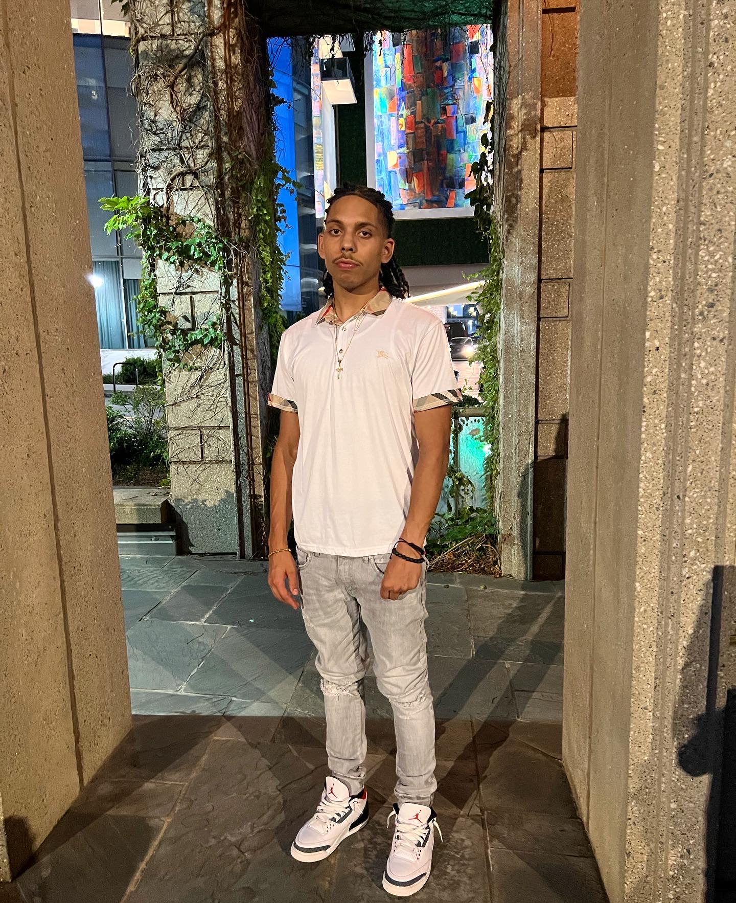

I am an upcoming software engineer ready to learn and put my skills to work!
You can find me in the Raleigh, NC area.
--about--
I am currently unemployed. I graduated a highschool called Friendship Christian in 2021 and I went to Winston-Salem State University for a year. Growing up, I was alwayds into computers. I believe I got that from my older brother. He was always learning something about computers but something that immediatly caught my attention is coding. Something about being able crate my own thing just always amazed me.
While I was in college, I couldn't really find much intertest in it and I never really liked the idea that it would take 4+ years to do what I really wanted to do. So my brother introduced me to thinkful. I Thought it was pretty cool so I looked into it and immediatly applied for it. I also took a udemy course called "The Web Developer Bootcamp 2022." I learned a lot of things that I think prepared me well for this program and I am very excited to see where this program takes me.
Along with coding I enjoy:
- Playing basketball
- Reading
- Hanging out with friends
- spending time with my family.